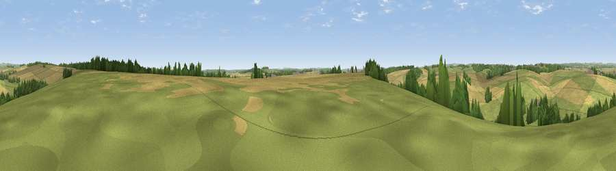

Viewpoint near Tarrant Rushton
#29090 in England · top 48% of its area beats it · near Tarrant Rushton · path 268 mWhere it is
The exact computed spot (ST 94625 06875). Click the marker for map links.
Public access: the nearest public right of way is about 268 m away — the final stretch may cross private land. Computed from Natural England's CRoW access layer and OpenStreetMap rights of way — not the legal definitive map. Always verify locally.
The view, rendered

A 360° render of this exact spot computed from the terrain model, tree cover and land cover — summer colours, afternoon light, calibrated against photographs of famous viewpoints. Real trees, hedges and buildings will differ in detail.
The panorama
Grey silhouette: terrain skyline in each direction (720 bearings, Earth curvature and refraction included). Dashed green: skyline with trees (+15 m) and buildings (+8 m) as obstacles. Blue strip: how far the ground is visible on each bearing.
Where the view opens
Wedge length = distance to the farthest visible ground on that bearing (vegetation-aware). Rings at 10, 25 and 50 km.
What fills the view
51% grassland · 40% cropland · 9% woodland ·
Angular shares of the visible panorama (visual magnitude), not map area. Landscape diversity 0.42 (0–1 Shannon).
Key numbers
More beautiful places nearby
The staircase of upgrades: each row has a higher view potential than everything closer. Driving times are estimates from straight-line distance, calibrated against real road routing — check an actual route before setting out.
| Place | Direction | Drive | Score |
|---|---|---|---|
| Viewpoint near Charlton Marshall | SW · 4 km | ~9 min | 41.4 |
| Badbury Rings | SSE · 4 km | ~10 min | 41.5 |
| Viewpoint near Spetisbury | SSW · 6 km | ~13 min | 45.2 |
| Viewpoint near Stourpaine | WNW · 8 km | ~16 min | 47.7 |
| Viewpoint near Sturminster Marshall | S · 9 km | ~18 min | 50.2 |
| Viewpoint near Iwerne Minster | NW · 10 km | ~19 min | 55.2 |
| Viewpoint near Stourpaine | WNW · 10 km | ~19 min | 57.5 |
| Hambledon Hill | WNW · 11 km | ~21 min | 72.7 |
50.86136, -2.07774 · source: screening · position refined by local search. Computed location — check access rights before visiting.